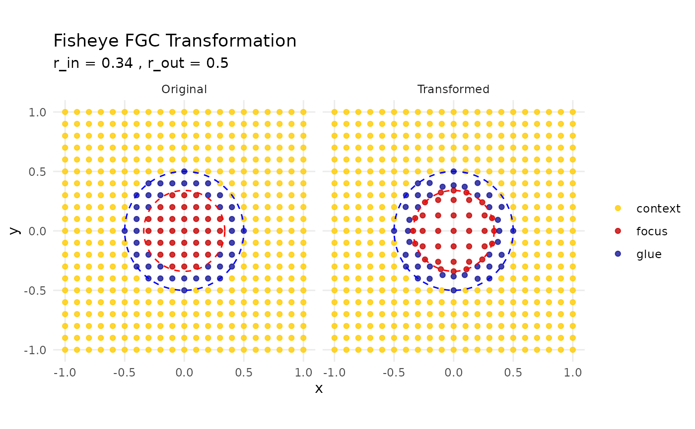

Transforms 2D coordinates using a Focus–Glue–Context (FGC) fisheye transformation. The function expands points inside a focus region, compresses points in a glue region, and leaves the surrounding context unchanged. Optionally, a rotational "revolution" can be added to the glue region to produce a swirling effect.
Usage
# S3 method for class 'matrix'
fisheye_fgc(
data,
cx = 0,
cy = 0,
r_in = 0.34,
r_out = 0.5,
zoom_factor = 1.5,
squeeze_factor = 0.3,
method = "expand",
revolution = 0,
...
)
# S3 method for class 'data.frame'
fisheye_fgc(data, ...)Arguments
- data
A matrix or data frame with at least two columns representing x and y coordinates.
- cx, cy
Numeric. The x and y coordinates of the fisheye center (default = 0, 0).
- r_in
Numeric. Radius of the focus zone (default = 0.34).
- r_out
Numeric. Radius of the glue zone boundary (default = 0.5).
- zoom_factor
Numeric. Expansion factor applied within the focus zone (default = 1.5).
- squeeze_factor
Numeric in (0,1]. Compression factor applied within the glue zone (smaller values = stronger compression, default = 0.3).
- method
Character. "expand" or "outward" (default = "expand").
- revolution
Numeric. Optional rotation factor applied in the glue zone. Positive values rotate counter-clockwise, negative values clockwise (default = 0.0).
- ...
Additional arguments from the S3 generic, currently ignored.
Value
A numeric matrix with two columns (x_new, y_new) of transformed coordinates.
Additional attributes:
"zones": character vector classifying each point as"focus","glue", or"context"."original_radius": numeric vector of original radial distances."new_radius": numeric vector of transformed radial distances.
Details
This function operates in three radial zones around a chosen center:
Focus zone (r <= r_in): expands distances from the center using
zoom_factor, but does not exceed ther_inboundary.Glue zone (r_in < r <= r_out): compresses distances using a power-law defined by
squeeze_factor, then remaps them to smoothly connect focus and context zones.Context zone (r > r_out): coordinates remain unchanged.
Optionally, points in the glue zone can be rotated (revolution) to emphasize continuity.
Examples
# Create a set of example coordinates
grid <- create_test_grid(range = c(-1, 1), spacing = 0.1)
# Apply FGC fisheye with expansion and compression
transformed <- fisheye_fgc(grid, r_in = 0.34, r_out = 0.5, zoom_factor = 1.3, squeeze_factor = 0.5)
# Plot original vs transformed
plot_fisheye_fgc(grid, transformed, r_in = 0.34, r_out = 0.5)
